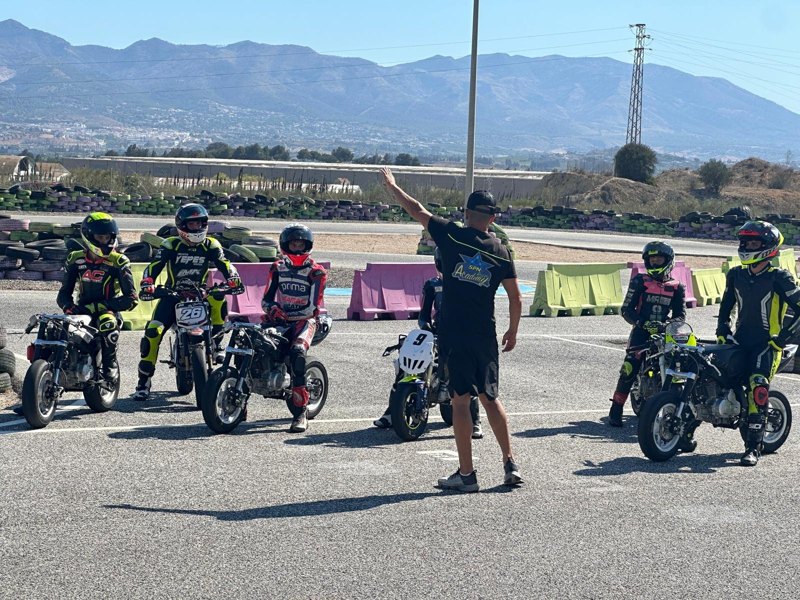
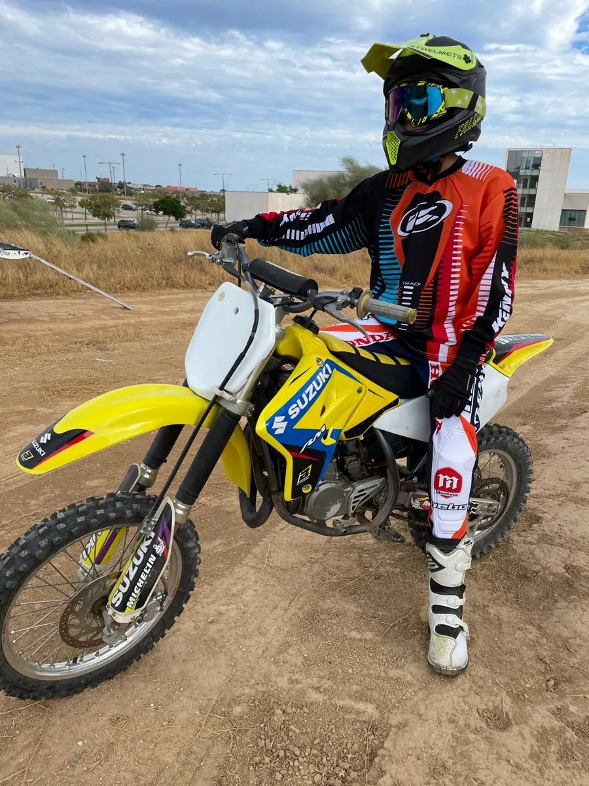
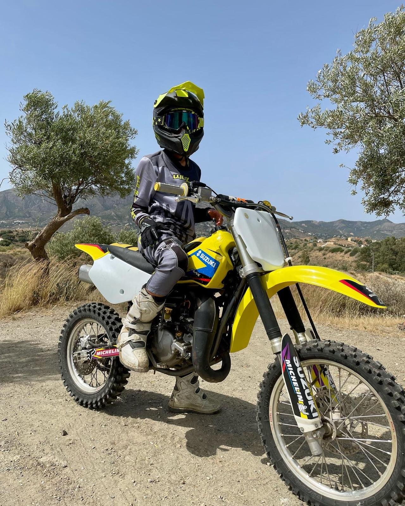
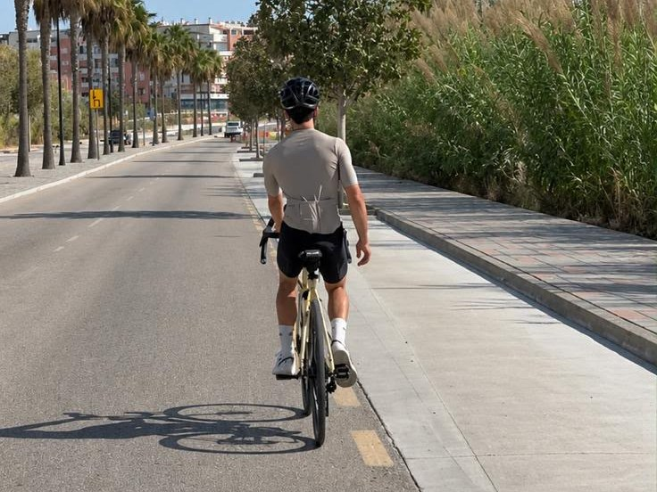

On the bike
The core of the weekAt SPN Academy each session starts with a briefing from coach Nico Ferreira: the lines, the braking points and what to work on that day. Then the riders go out and do it lap after lap. Track days on his R6 at larger circuits add the speed and distance a training track cannot.



Flat track
Bike controlSliding a dirt bike on a loose surface teaches throttle and rear-wheel control that carries straight over to the circuit.


Strength and conditioning
GymStrength work and Hyrox-style conditioning, so he can hold race pace and body position to the last lap.
Endurance
Road and runningLong rides on the road bike and regular runs build the aerobic base a race distance demands.

Recovery
Sleep and restRecovery is planned like training. His recovery and sleep kit comes from partners Hyperice, Manta Sleep and Lumie.